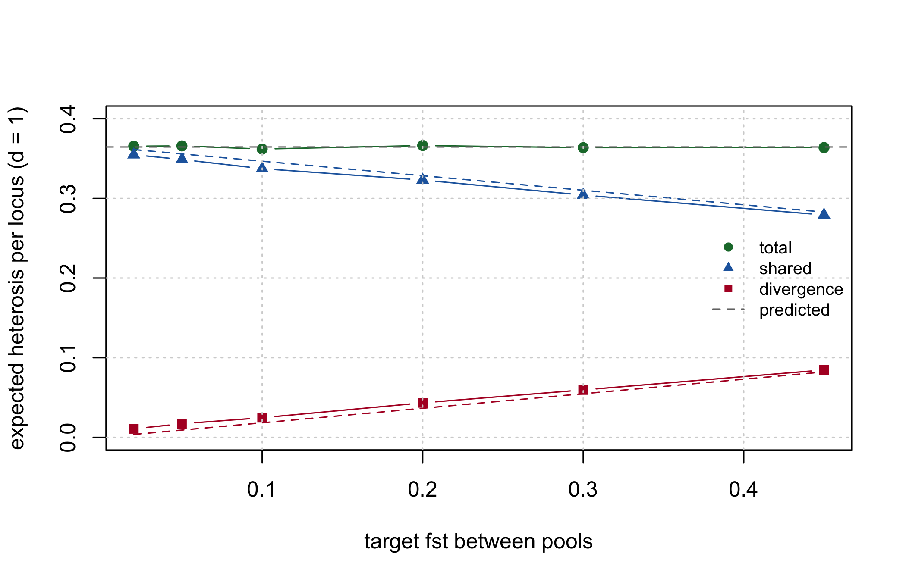

heterosis_value
#> function (X, d)
#> {
#> stopifnot(length(d) == ncol(X))
#> drop((X == 0.5) %*% d)
#> }
#> <bytecode: 0x99e7d59a0>
#> <environment: namespace:hybdiv>8 Heterosis, dominance, and what divergence buys
Since Chapter 2 this book has repeated a claim without proving it: that the divergence between the heterotic pools is the engine of heterosis, and is therefore to be maintained rather than minimised. Chapter 9 will decompose diversity on that basis and Chapter 11 will build a monitoring panel around it. The claim has carried a lot of weight for an assertion.
This chapter derives it, and then corrects it. The derivation is short and the identity is exact. The correction is that the usual reading of the identity – push the pools apart and you will get more heterosis – is false, and the simulation says so unambiguously.
Then it goes one step further than the mean. Expected heterosis is what a pool pair is worth on average; what a breeder selects on is how heterosis is distributed across the crosses in the factorial. Those are different questions with different answers, and the second one is where general and specific combining ability come from.
The model used throughout is dominance only, which Labroo et al. (2021) review as one of several non-exclusive mechanisms proposed for heterosis. Nothing below depends on dominance being the whole story; it depends on there being some per-locus advantage to heterozygosity, and \(d_k\) is the name for whatever that is.
8.1 The dominance model, minimally
8.1.1 The one-locus scale
The classical parameterisation puts the origin at the midpoint of the two homozygotes. One homozygote is then worth \(+a\), the other \(-a\), and the heterozygote is worth \(d\). Under random mating at frequency \(p\), with \(q = 1 - p\), the population mean is
\[M = a\,(p - q) + 2pq\,d\]
The first term is additive and the second is the dominance contribution. Only the second depends on how many heterozygotes there are, and it is the only one that a cross between two inbred parents can move.
Note\(a\) appears in this section and nowhere else
The symbols in that display are the textbook ones, local to this section. This book’s additive marker effects are \(\beta_k\) (Chapter 12), and its \(\alpha\) is the diversity-loss statistic of Chapter 9, not the classical average effect of a substitution. Nothing downstream of this section carries an \(a\).
8.1.2 What \(d_k\) is, and what it is not
\(d_k\) is functional dominance: the heterozygote’s departure from the homozygote midpoint at locus \(k\). It is a property of the locus. It does not move when allele frequencies move.
Fisher’s statistical dominance deviation is a different object – the residual left after projecting genotypic values onto the best additive model in a particular population. It is a property of the population as much as of the locus, and it changes when frequencies change.
Both appear in this chapter, and keeping them apart is the whole trick. \(d_k\) is the input. The specific combining ability of Section 8.9 is the statistical dominance deviation that a given \(d_k\) induces over a given pair of pools. One is a constant; the other is an answer that depends on where the pools happen to sit.
The distinction also buys the model its generality. Dominance, overdominance (a heterozygote outside both homozygotes, \(|d| > |a|\)) and pseudo-overdominance (two dominant favourable alleles in repulsion phase, close enough that no marker separates them) are three different biological stories, and Labroo et al. (2021) review the evidence for each. At marker resolution they are the same arithmetic: a locus at which the F1 gains something the mid-parent does not. A single \(d_k\) absorbs all three, and nothing below can distinguish them – nor needs to.
8.1.3 The mid-parent difference
Write the genotypic value of a hybrid as an additive part plus a dominance deviation. The parents are fully inbred, so every parent is homozygous at every locus, and their additive contributions average exactly to the F1’s own additive value. They cancel from the mid-parent difference. What survives is the dominance deviation at the loci where the F1 is heterozygous:
\[H_i = \sum_k d_k \, \mathbb{1}\{x_{ik} = 0.5\}\]
The additive effects never appear. That is the result, not an omission – and it is why heterosis_value() takes no additive-effect argument:
Against the literal oracle of Appendix C, which loops over loci and compares the two parents’ genotypes one at a time:
max(abs(heterosis_value(ctx$X[1:25, ], d) -
ref_heterosis(L, head(ctx$ped, 25), d)))
#> [1] 0The cancellation is worth seeing directly. Give the loci additive effects as well, score a real F1 and its two parents, and subtract:
a <- rnorm(ctx$m, 0, 0.2)
val <- function(x) sum(a * (2 * x - 1)) + sum(d * (x == 0.5))
i <- 7
mid <- (val(L[ctx$ped$a[i], ] / 2) + val(L[ctx$ped$b[i], ] / 2)) / 2
c(mid_parent_difference = val(ctx$X[i, ]) - mid,
heterosis_value = heterosis_value(ctx$X[i, , drop = FALSE], d))
#> mid_parent_difference heterosis_value
#> 362.3386 362.3386The additive effects were drawn at random and never entered the second number.
8.2 Expected heterosis over a pool pair
A locus is heterozygous in the F1 when the two gametes carry different alleles, which for a cross drawn at random between the pools happens with probability \(p_A(1 - p_B) + (1 - p_A)p_B\). So the expected heterosis over all \(A \times B\) crosses follows from the pool frequencies alone:
\[\mathbb{E}[H] = \sum_k d_k \left[\, p_{A k} + p_{B k} - 2 p_{A k} p_{B k} \right]\]
The candidate pool here is the full factorial, so this is exact rather than approximate, and the residual is at machine precision:
abs(heterosis_expected(pA, pB, d) - mean(heterosis_value(ctx$X, d)))
#> [1] 1.136868e-13That is a mean over \(N =\) 625 crosses, and a mean is not a ranking. Hold on to the question of how the individual crosses are spread around it; Section 8.9 answers it exactly.
8.3 The identity
Now split that bracket. Writing \(\bar p = (p_A + p_B)/2\) and \(y = p_A - p_B\), the per-locus F1 heterozygosity separates exactly:
\[p_A + p_B - 2 p_A p_B \;=\; \underbrace{2 \bar p (1 - \bar p)}_{\text{shared}} \;+\; \underbrace{y^2 / 2}_{\text{divergence}}\]
The first term is the heterozygosity a single merged pool at frequency \(\bar p\) would have produced. The second is what keeping the pools apart adds on top of it. Averaged over loci, with \(d_k \equiv 1\) so that the weighting does not obscure the algebra, those two terms are exactly the \(GD_T\) and \(GD_{BS}\) of the Caballero & Toro partition that Chapter 2 derived and gd_partition() computes:
hp <- heterosis_partition(pA, pB, rep(1, ctx$m)) / ctx$m
gp <- gd_partition(seq_len(ctx$N), ctx)
fmt(data.frame(term = c("shared", "divergence"),
heterosis = c(hp[["shared"]], hp[["divergence"]]),
partition = c(gp[["GD_T"]], gp[["GD_BS"]]),
residual = c(abs(hp[["shared"]] - gp[["GD_T"]]),
abs(hp[["divergence"]] - gp[["GD_BS"]]))), 12)| term | heterosis | partition | residual |
|---|---|---|---|
| shared | 0.3280928 | 0.3280928 | 0 |
| divergence | 0.0335968 | 0.0335968 | 0 |
\(GD_{BS}\) weighted by dominance deviations is the divergence half of expected heterosis. “Between-pool divergence is the heterosis engine” is an identity, not a slogan.
8.3.1 A third form: one minus the between-pool coancestry
The sum of those two components has a name of its own. \(\theta_{AB} = \mathbf{w}_A' \mathbf{f}^L \mathbf{w}_B\) is the between-pool coancestry of Chapter 9 – the probability that an allele drawn from pool A and an allele drawn from pool B are identical in state. Its complement is the whole bracket:
\[GD_T + GD_{BS} \;=\; 1 - \theta_{AB}\]
tp <- theta_pools(seq_len(ctx$N), ctx)
c(shared_plus_divergence = gp[["GD_T"]] + gp[["GD_BS"]],
one_minus_theta_AB = 1 - tp[["theta_AB"]])
#> shared_plus_divergence one_minus_theta_AB
#> 0.3616896 0.3616896Which is the shortest statement the chapter has to make: expected F1 heterozygosity is one minus between-pool coancestry. Everything else here is a weighting of that quantity, or a way of splitting it.
8.4 A second identity, at the hybrid level
Chapter 9 reports GD_WI_hyb, the heterozygosity actually carried inside the F1s, separately from the line-level partition, because with inbred parents GD_WI is zero by construction and carries no signal. The two are linked:
\[2 \cdot GD_{WI\text{-}hyb} = GD_T + GD_{BS}\]
c(lhs = 2 * gp[["GD_WI_hyb"]], rhs = gp[["GD_T"]] + gp[["GD_BS"]],
GD_WI = gp[["GD_WI"]])
#> lhs rhs GD_WI
#> 3.616896e-01 3.616896e-01 -4.440892e-16Exact on the full factorial, because every \(A \times B\) pairing is present exactly once. On a selected subset it holds only approximately – the gap is the pairing structure the selection imposed, and tests/testthat/test-dominance.R pins it at both scales.
8.5 When genetic distance predicts heterosis exactly
Before the corrections start, one special case is worth having, because it explains a whole literature.
Set \(d_k \equiv d\), constant across loci. Then \(H\) stops being a weighted count and becomes a plain one: \(d\) times the number of loci at which the two parents differ. For inbred lines that count is exactly what the coancestry kernel of Chapter 11 measures, so for a cross between lines \(a\) and \(b\)
\[H_{ab} \;=\; d\,m\,(1 - f^L_{ab}) \;=\; d\,m\,\mathrm{MRD}_{ab}^2\]
h1 <- heterosis_value(ctx$X, rep(1, ctx$m))
fL <- molecular_coancestry(L / 2)
ab <- cbind(ctx$ped$a, ctx$ped$b)
c(vs_coancestry = max(abs(h1 - ctx$m * (1 - fL[ab]))),
vs_mrd = max(abs(h1 - ctx$m * mrd_matrix(L / 2)[ab]^2)))
#> vs_coancestry vs_mrd
#> 1.136868e-13 2.273737e-13Both residuals are at machine precision. Under flat dominance, heterosis and molecular coancestry are one statistic seen twice – which is Trap 1 of Chapter 11 read from the other side, and the reason the diversity kernel this whole book runs on turns out to be the right object for the heterosis question as well.
That is also the exact condition under which marker distance predicts heterosis. It is a strong condition, and it fails as soon as \(d\) varies. With the gamma-distributed deviations used everywhere else in this chapter the relationship survives but stops being an identity:
c(cor_uniform_d = cor(h1, 1 - fL[ab]),
cor_real_d = cor(heterosis_value(ctx$X, d), 1 - fL[ab]))
#> cor_uniform_d cor_real_d
#> 1.0000000 0.7809147A correlation of 0.78 is a useful predictor and a poor identity. The empirical record on distance-versus-heterosis is mixed for exactly this reason: distance is a sufficient statistic for heterosis precisely when dominance is flat across loci, and Section 8.7 is about what happens when it is not.
8.6 Divergence is not a bonus
Read divergence as free money and you will reach for \(F_{ST}\). Do not.
Sweep the pools apart and watch all three terms. Nothing here is selected; the pools simply drift further from their common ancestor as fst rises:
sweep_het <- function(fst) {
cf <- modifyList(book_cfg, list(fst = fst, seed = 5))
Lf <- simulate_lines(cf)
pl <- rep(c("A", "B"), c(cf$n_pool_A, cf$n_pool_B))
Pf <- pool_freqs(Lf / 2, pl)
hp <- heterosis_partition(Pf["A", ], Pf["B", ], rep(1, cf$m)) / cf$m
cm <- pool_complementarity(Lf / 2, pl)
data.frame(fst = fst, shared = hp[["shared"]], divergence = hp[["divergence"]],
total = hp[["total"]],
frac_opposite_fixed = cm[["frac_opposite_fixed"]],
mean_abs_delta_p = cm[["mean_abs_delta_p"]],
mean_sq_delta_p = cm[["mean_sq_delta_p"]])
}
sw <- do.call(rbind, lapply(c(0.02, 0.05, 0.10, 0.20, 0.30, 0.45), sweep_het))
fmt(sw, 4)| fst | shared | divergence | total | frac_opposite_fixed | mean_abs_delta_p | mean_sq_delta_p |
|---|---|---|---|---|---|---|
| 0.02 | 0.3549 | 0.0107 | 0.3656 | 0.000 | 0.1138 | 0.0214 |
| 0.05 | 0.3489 | 0.0171 | 0.3659 | 0.000 | 0.1414 | 0.0341 |
| 0.10 | 0.3374 | 0.0246 | 0.3620 | 0.000 | 0.1715 | 0.0493 |
| 0.20 | 0.3231 | 0.0433 | 0.3664 | 0.002 | 0.2252 | 0.0867 |
| 0.30 | 0.3042 | 0.0595 | 0.3638 | 0.012 | 0.2589 | 0.1191 |
| 0.45 | 0.2792 | 0.0846 | 0.3639 | 0.041 | 0.3012 | 0.1693 |
The divergence term rises by a factor of 7.9. The shared term falls by almost exactly as much. The total does not move.
8.6.1 The two terms, term by term
The algebra is one line. Pool A and pool B drift independently away from a common ancestral frequency \(p\), so \(\mathbb{E}[p_A] = \mathbb{E}[p_B] = p\) and \(\mathbb{E}[p_A p_B] = p^2\). Therefore
\[\mathbb{E}\!\left[p_A + p_B - 2 p_A p_B\right] = 2p(1-p),\]
which contains no \(F_{ST}\) at all. With ancestral frequencies drawn uniformly on \([0.05, 0.95]\) the predicted level is \(\mathbb{E}[2p(1-p)] =\) 0.365, against a simulated mean of 0.3646 across the whole sweep.
That the sum is flat is the headline, but the Balding-Nichols model of Appendix A predicts each half separately, which is a sharper statement. Under it \(\mathrm{Var}(p_A) = \mathrm{Var}(p_B) = F_{ST}\,p(1-p)\), so \(\mathrm{Var}(\bar p) = F_{ST}\,p(1-p)/2\) and \(\mathrm{Var}(y) = 2F_{ST}\,p(1-p)\). Substituting:
\[\mathbb{E}\!\left[2\bar p(1 - \bar p)\right] = 2p(1-p)\left(1 - \tfrac{F_{ST}}{2}\right), \qquad \mathbb{E}\!\left[y^2/2\right] = F_{ST}\,p(1-p)\]
The shared term loses \(F_{ST}\,p(1-p)\) and the divergence term gains \(F_{ST}\,p(1-p)\). Not approximately, and not on average over some range: the same expression, with opposite signs. Both predictions are parameter-free once the ancestral distribution is fixed, so they can be laid straight on top of the sweep:
Ep <- 2 * (0.5 - (0.9^2 / 12 + 0.25)) # E[2p(1-p)] for p ~ U(0.05, 0.95)
sw$pred_shared <- Ep * (1 - sw$fst / 2)
sw$pred_divergence <- Ep * sw$fst / 2
fmt(sw[, c("fst", "shared", "pred_shared", "divergence", "pred_divergence")], 4)| fst | shared | pred_shared | divergence | pred_divergence |
|---|---|---|---|---|
| 0.02 | 0.3549 | 0.3614 | 0.0107 | 0.0036 |
| 0.05 | 0.3489 | 0.3559 | 0.0171 | 0.0091 |
| 0.10 | 0.3374 | 0.3468 | 0.0246 | 0.0182 |
| 0.20 | 0.3231 | 0.3285 | 0.0433 | 0.0365 |
| 0.30 | 0.3042 | 0.3102 | 0.0595 | 0.0548 |
| 0.45 | 0.2792 | 0.2829 | 0.0846 | 0.0821 |
plot(sw$fst, sw$total, type = "b", pch = 19, col = "#1b7837", ylim = c(0, 0.40),
xlab = "target fst between pools", ylab = "expected heterosis per locus (d = 1)")
lines(sw$fst, sw$shared, type = "b", pch = 17, col = "#2166ac")
lines(sw$fst, sw$divergence, type = "b", pch = 15, col = "#b2182b")
lines(sw$fst, sw$pred_shared, lty = 2, col = "#2166ac")
lines(sw$fst, sw$pred_divergence, lty = 2, col = "#b2182b")
abline(h = mean(sw$total), lty = 2, col = "grey45")
legend("right", c("total", "shared", "divergence", "predicted"), bty = "n",
cex = 0.8, pch = c(19, 17, 15, NA), lty = c(NA, NA, NA, 2),
col = c("#1b7837", "#2166ac", "#b2182b", "grey45"))
grid()
The one visible gap is at the low end, where the measured divergence sits above its prediction. That is not drift, it is estimation: \(y\) is computed from 25 and 25 sampled lines, so the measured \(y^2\) carries a sampling term of \(p(1-p)(1/n_A + 1/n_B)\) on top of the real divergence. At fst = 0.02 that term is larger than the signal. A pool pair’s apparent \(F_{ST}\) always overstates its true divergence, and by more the smaller the pools.
ImportantEvery unit of divergence is paid for out of the shared term
Under neutral divergence the trade is exactly one for one. Drifting the pools apart does not create heterosis; it relocates it from the shared term to the divergence term. A programme that maximises \(F_{ST}\) has bought nothing and spent its within-pool diversity to do it.
This is the mechanism behind Chapter 11 Trap 3, which observed the symptom – “\(F_{ST}\) keeps rising at loci that are already divergent, which buys no additional heterosis” – and prescribed the right treatment without being able to say why.
8.7 What actually buys heterosis
If divergence per se is worth nothing, why do heterotic groups work?
Because real pools are not diverged at random with respect to \(d\). The divergence term is \(\sum_k d_k y_k^2 / 2\), a weighted sum. It grows when the loci that diverge are the loci that carry dominance – and under drift the two are independent, which is exactly why the total was flat.
8.7.1 Alignment is a covariance
That last sentence can be made into a number rather than left as a word. A weighted sum is a mean times a mean plus a covariance, so
\[\sum_k d_k\,y_k^2 / 2 \;=\; \frac{m}{2}\Big[\, \bar d \; \overline{y^2} \;+\; \mathrm{cov}(d,\, y^2) \,\Big]\]
y2 <- (pA - pB)^2
c(divergence = sum(d * y2 / 2),
from_parts = ctx$m / 2 * (mean(d) * mean(y2) + cov(d, y2) * (ctx$m - 1) / ctx$m))
#> divergence from_parts
#> 32.94521 32.94521The first bracketed term is what \(F_{ST}\) can see: average divergence times average dominance. The second is what it cannot. Alignment is \(\mathrm{cov}(d, y^2)\), and no statistic computed from allele frequencies alone can contain it, because \(d\) does not appear in one.
8.7.2 The scenarios
Hold the pools fixed, hold \(F_{ST}\) fixed, hold the multiset of dominance deviations fixed, and change only which locus gets which \(d_k\):
mk <- function(dec) { v <- numeric(ctx$m); v[order(y2)] <- sort(d, decreasing = dec); v }
scen <- list(`anti-aligned` = mk(TRUE), `independent` = d, `aligned` = mk(FALSE))
al <- do.call(rbind, lapply(names(scen), function(n) {
h <- heterosis_partition(pA, pB, scen[[n]])
data.frame(scenario = n, cor_d_y2 = cor(scen[[n]], y2),
shared = h[["shared"]], divergence = h[["divergence"]], total = h[["total"]])
}))
al$relative <- al$total / al$total[al$scenario == "independent"]
fmt(al, 3)| scenario | cor_d_y2 | shared | divergence | total | relative |
|---|---|---|---|---|---|
| anti-aligned | -0.608 | 270.538 | 11.283 | 281.821 | 0.792 |
| independent | 0.006 | 322.723 | 32.945 | 355.669 | 1.000 |
| aligned | 0.953 | 370.139 | 66.313 | 436.452 | 1.227 |
bp <- barplot(rbind(al$shared, al$divergence), beside = FALSE,
names.arg = al$scenario, col = c("#2166ac", "#b2182b"),
ylab = "expected heterosis", border = NA)
legend("topleft", c("shared", "divergence"), fill = c("#2166ac", "#b2182b"),
bty = "n", cex = 0.8, border = NA)
text(bp, al$total, sprintf("%.2fx", al$relative), pos = 3, cex = 0.8, xpd = NA)
grid(nx = NA, ny = NULL)
\(F_{ST}\) is identical in all three columns – it is a function of the frequencies only, and \(d\) never enters it. Expected heterosis ranges over a factor of 1.55.
8.7.3 Isolating the divergence channel
One honest qualification to that demonstration. Sorting \(d\) against \(y^2\) moves the shared term as well, because \(y^2\) is not independent of \(2\bar p(1 - \bar p)\): a locus with a large frequency difference tends to sit at an intermediate mean frequency. Some of the effect above is therefore arriving through the shared half, not the divergence half.
The channel can be separated. Permute \(d\) only within groups of loci that share a value of the shared weight. The shared term is then invariant by construction – exactly, not approximately – and whatever moves is the divergence channel alone:
hz <- 2 * ((pA + pB) / 2) * (1 - (pA + pB) / 2)
grp <- split(seq_len(ctx$m), round(hz, 9))
strat <- function(dec) {
v <- numeric(ctx$m)
for (i in grp) v[i[order(y2[i])]] <- sort(d[i], decreasing = dec)
v
}
st <- do.call(rbind, lapply(c(aligned = FALSE, `anti-aligned` = TRUE), function(dec)
as.data.frame(as.list(heterosis_partition(pA, pB, strat(dec))))))
fmt(st, 4)| shared | divergence | total | |
|---|---|---|---|
| aligned | 322.7234 | 57.7211 | 380.4445 |
| anti-aligned | 322.7234 | 14.4716 | 337.1949 |
The shared column is identical to the digit, and the divergence term still moves by a factor of 4. The alignment result survives its own control.
8.8 Reading the S1 panel again
Chapter 11 logs frac_opposite_fixed and mean_abs_delta_p every cycle as stand-ins for heterosis potential. The sweep above says how good they are.
mean_sq_delta_p is not a proxy at all – it is the divergence term, exactly, up to the factor of two:
c(half_mean_sq = mean(sw$mean_sq_delta_p) / 2,
divergence = mean(sw$divergence))
#> half_mean_sq divergence
#> 0.039983 0.039983frac_opposite_fixed is a different matter. At the divergence a real maize pool pair actually shows it is essentially zero, and it stays near zero across most of the range where breeding decisions are made:
fmt(sw[, c("fst", "divergence", "frac_opposite_fixed", "mean_abs_delta_p",
"mean_sq_delta_p")], 4)| fst | divergence | frac_opposite_fixed | mean_abs_delta_p | mean_sq_delta_p |
|---|---|---|---|---|
| 0.02 | 0.0107 | 0.000 | 0.1138 | 0.0214 |
| 0.05 | 0.0171 | 0.000 | 0.1414 | 0.0341 |
| 0.10 | 0.0246 | 0.000 | 0.1715 | 0.0493 |
| 0.20 | 0.0433 | 0.002 | 0.2252 | 0.0867 |
| 0.30 | 0.0595 | 0.012 | 0.2589 | 0.1191 |
| 0.45 | 0.0846 | 0.041 | 0.3012 | 0.1693 |
At fst = 0.10 it is exactly zero: not one marker in 2000 qualifies. It counts near-fixed opposite loci, and at realistic divergence there are almost none – the divergence all lives at intermediate frequency differences, which the threshold discards. It becomes informative only above fst = 0.30, well outside the range Chapter 11 takes a dent-versus-flint pair to occupy.
Log mean_sq_delta_p. It is exact, it is monotone across the whole range, and it costs one subtraction more than the statistic already being logged. pool_complementarity() and s1_monitor() now return it.
8.9 General and specific combining ability
Everything so far has been about \(\mathbb{E}[H]\). Now the spread.
The same algebra that produced the shared/divergence split produces the combining-ability decomposition, with no new machinery and no model fitting. Take one locus, write the two parents’ genotypes as their pool frequency plus a deviation, \(u = p_A + \delta u\) and \(v = p_B + \delta v\), and expand the per-locus heterozygosity \(u + v - 2uv\):
\[u + v - 2uv \;=\; \underbrace{p_A + p_B - 2p_Ap_B}_{\text{mean}} \;+\; \underbrace{(1 - 2p_B)\,\delta u}_{\text{parent A}} \;+\; \underbrace{(1 - 2p_A)\,\delta v}_{\text{parent B}} \;-\; \underbrace{2\,\delta u\, \delta v}_{\text{both}}\]
Four terms: one constant, one linear in each parent, one bilinear. Weight by \(d_k\) and sum over loci and the classical decomposition falls out,
\[H_{ij} = \mu + g^A_i + g^B_j + s_{ij}\]
with
\[g^A_i = \sum_k d_k (1 - 2p_{Bk})\,\delta u_{ik}, \qquad s_{ij} = -2 \sum_k d_k\, \delta u_{ik}\, \delta v_{jk}\]
What is linear in one parent is general combining ability – it is carried into every cross that parent enters. What is bilinear depends on which two lines met, and is specific combining ability. heterosis_gca_sca() is that expansion and nothing more:
heterosis_gca_sca
#> function (U, V, d)
#> {
#> stopifnot(ncol(U) == ncol(V), length(d) == ncol(U))
#> pA <- colMeans(U)
#> pB <- colMeans(V)
#> cU <- sweep(U, 2, pA)
#> cV <- sweep(V, 2, pB)
#> list(mu = heterosis_expected(pA, pB, d), gca_A = drop(cU %*%
#> (d * (1 - 2 * pB))), gca_B = drop(cV %*% (d * (1 - 2 *
#> pA))), sca = -2 * (cU * rep(d, each = nrow(U))) %*% t(cV))
#> }
#> <bytecode: 0x99b2a8740>
#> <environment: namespace:hybdiv>It reconstructs every hybrid in the factorial exactly, and all three components are mean zero:
cs <- heterosis_gca_sca(U, V, d)
H <- heterosis_value(ctx$X, d)
ia <- ctx$ped$a
ib <- ctx$ped$b - nA
c(max_residual = max(abs(H - (cs$mu + cs$gca_A[ia] + cs$gca_B[ib] +
cs$sca[cbind(ia, ib)]))),
mu_vs_mean = abs(cs$mu - mean(H)),
mean_gca_A = mean(cs$gca_A), mean_sca = mean(cs$sca))
#> max_residual mu_vs_mean mean_gca_A mean_sca
#> 7.958079e-13 1.136868e-13 -4.796163e-16 -1.264766e-15This is not a decomposition that resembles the two-way analysis of variance. It is the two-way analysis of variance – the \(s_{ij}\) matrix is the interaction residual of the additive fit, to machine precision:
max(abs(resid(lm(H ~ factor(ia) + factor(ib))) - cs$sca[cbind(ia, ib)]))
#> [1] 6.966872e-12Comstock et al. (1949) designed reciprocal recurrent selection around the distinction between these two components. The algebra above says what each one is made of.
8.9.1 GCA is an average effect in the other pool’s background
Look at the weight on \(\delta u\): it is \(d_k(1 - 2p_{Bk})\), and \(1 - 2p_B\) is \(q_B - p_B\). That is precisely the frequency factor in the classical average effect of a gene substitution, \(a + d\,(q - p)\) – except that the frequencies are pool B’s, not pool A’s.
This is the whole reason combining ability is not a property of a line. A pool-A line’s alleles are always substituted into a pool-B background, so its general combining ability is a dominance effect evaluated at the tester pool’s frequencies. Change the tester pool and every number changes. Two consequences follow immediately:
- A locus where the opposite pool sits at \(p_B = 0.5\) contributes exactly zero GCA and pure SCA. Maximum uncertainty in the tester makes the locus’s contribution unpredictable from either parent alone.
- A locus where the opposite pool is fixed contributes its full \(d_k\) to GCA and no SCA at all. The cross is then predictable from the pool-A parent by itself.
Between those two limits sits every real programme, and Section 8.10 is about which limit divergence pushes it towards.
8.9.2 SCA is minus twice a weighted parental covariance
The bilinear term is \(s_{ij} = -2\sum_k d_k\,\delta u_{ik}\,\delta v_{jk}\): minus twice a \(d\)-weighted inner product of the two parents’ centred genotypes. Two parents that deviate from their pools in the same direction have a positive covariance and therefore a negative SCA.
That is the formal version of a rule of thumb the literature has carried for decades. Parents that resemble each other – after removing what is typical of each pool – cross badly, and the resemblance that matters is weighted by \(d\). It is also the same object as Section 8.5: a covariance between centred genotypes is a genetic distance in disguise, which is why distance predicts SCA about as well as it predicts heterosis, and fails in the same circumstances.
8.9.3 The variance components
Because the three components are orthogonal, the variance of heterosis over the factorial splits with them, and under linkage equilibrium each piece has a closed form in the pool frequencies:
\[\sigma^2_{GCA_A} = \sum_k d_k^2\,(1 - 2p_{Bk})^2\,p_{Ak}q_{Ak}, \qquad \sigma^2_{SCA} = 4 \sum_k d_k^2\,p_{Ak}q_{Ak}\,p_{Bk}q_{Bk}\]
qa <- pA * (1 - pA)
qb <- pB * (1 - pB)
fmt(data.frame(
component = c("GCA_A", "GCA_B", "SCA"),
observed = c(var(cs$gca_A), var(cs$gca_B), var(as.vector(cs$sca))),
closed_form = c(sum(d^2 * (1 - 2 * pB)^2 * qa),
sum(d^2 * (1 - 2 * pA)^2 * qb),
4 * sum(d^2 * qa * qb))), 2)| component | observed | closed_form |
|---|---|---|
| GCA_A | 32.00 | 35.03 |
| GCA_B | 35.63 | 38.07 |
| SCA | 70.38 | 71.48 |
These agree to the sampling error of a variance computed on 25 lines, which is around 28%. The closed forms are the exact statements; the observed columns are one realisation of them.
Note what each one requires. \(\sigma^2_{SCA}\) carries \(p_Aq_A\,p_Bq_B\): it needs both pools to be polymorphic. Fix either pool at a locus and that locus contributes no specific combining ability at all, whatever its \(d_k\). Within-pool diversity is not merely something the diversity constraint defends – it is the raw material of SCA.
8.10 Divergence relocates dominance from SCA into GCA
Put the two closed forms next to the drift argument of Section 8.6 and a second result appears, one the mean could not have shown.
Under Balding-Nichols, \(\mathbb{E}[p_Aq_A] = p(1-p)(1 - F_{ST})\) and \(\mathbb{E}[(1 - 2p_B)^2] = (1-2p)^2 + 4F_{ST}\,p(1-p)\). So as the pools diverge
\[\sigma^2_{SCA} \propto (1 - F_{ST})^2, \qquad \sigma^2_{GCA} \text{ picks up a } +\,4F_{ST}\,p(1-p) \text{ term}\]
SCA variance falls quadratically; GCA variance rises. Expected heterosis, we already know, does not move at all. Sweeping the same pools apart and evaluating the closed forms:
reloc <- function(fst) {
cf <- modifyList(book_cfg, list(fst = fst, seed = 5))
Pf <- pool_freqs(simulate_lines(cf) / 2,
rep(c("A", "B"), c(cf$n_pool_A, cf$n_pool_B)))
a <- Pf["A", ]; b <- Pf["B", ]
va <- sum(d^2 * (1 - 2 * b)^2 * a * (1 - a))
vb <- sum(d^2 * (1 - 2 * a)^2 * b * (1 - b))
vs <- 4 * sum(d^2 * a * (1 - a) * b * (1 - b))
data.frame(fst = fst, var_GCA = va + vb, var_SCA = vs,
frac_SCA = vs / (va + vb + vs))
}
rl <- do.call(rbind, lapply(c(0.02, 0.05, 0.10, 0.15, 0.20, 0.30, 0.45), reloc))
fmt(rl, 3)| fst | var_GCA | var_SCA | frac_SCA |
|---|---|---|---|
| 0.02 | 60.047 | 91.807 | 0.605 |
| 0.05 | 62.025 | 87.941 | 0.586 |
| 0.10 | 68.630 | 75.503 | 0.524 |
| 0.15 | 71.230 | 67.599 | 0.487 |
| 0.20 | 77.956 | 63.166 | 0.448 |
| 0.30 | 80.630 | 45.875 | 0.363 |
| 0.45 | 77.894 | 27.767 | 0.263 |
plot(rl$fst, rl$var_GCA, type = "b", pch = 19, col = "#1b7837",
ylim = range(0, rl$var_GCA, rl$var_SCA),
xlab = "target fst between pools",
ylab = "variance of heterosis over the factorial")
lines(rl$fst, rl$var_SCA, type = "b", pch = 15, col = "#b2182b")
legend("right", c("GCA (both pools)", "SCA"), bty = "n", cex = 0.8,
pch = c(19, 15), col = c("#1b7837", "#b2182b"))
grid()
The share of variation that is specific falls from 0.6 to 0.26 across the sweep, with the mean fixed throughout.
Divergence does not buy heterosis. It buys predictability of heterosis. The dominance that was expressed as SCA at low divergence is expressed as GCA at high divergence, and GCA is the half that an additive model can express.
This is the answer to a question Chapter 12 had to leave open. That chapter fits one additive effect per marker and notes that such a model cannot represent SCA at all. The relocation result says how much that costs, and when: against poorly separated pools an additive model is missing most of the variation; against well separated ones it is missing a minority of it. Well defined heterotic groups are what make hybrid performance predictable from parents, and Technow et al. (2014) report exactly the regime – established, clearly separated dent and flint pools – in which additive hybrid prediction works well.
WarningRelocation is not creation, and this is still not a licence to maximise \(F_{ST}\)
Three things stay true at every point on that sweep. Expected heterosis does not change. The within-pool diversity spent to buy the divergence is spent for good. And \(\sigma^2_{SCA} \to 0\) is the limit in which no cross is better than its parents predict – there is nothing left to find by testing combinations, which is the activity the whole factorial exists to support.
So this is a second, independent reason for Chapter 11 Trap 3’s prescription to hold \(F_{ST}\) in a band rather than at a maximum. Section 8.6 gave the diversity-side reason. This is the prediction-side one, and it points the same way.
8.10.1 What this says about ranking crosses
Chapter 11 S2 shows that for crosses between fixed inbred lines the progeny variance collapses to zero, so the usefulness criterion loses its variance term and cross ranking reduces to ranking means. That is true, and it is why this book ranks hybrids on an index rather than on \(\mu + i h \sigma\).
It does not follow that the ranking is easy. The mean of an F1 contains an SCA term that an additive \(\mathbf{G}\) omits entirely, and Section 8.10 just put a size on it. The progeny variance collapses; the dominance deviation does not.
8.11 What this does not change
WarningThe diversity constraint stays additive
Nothing in this chapter reopens the optimisation. \(\theta\), \(GD\) and \(\alpha\) are computed on molecular coancestry and are functions of the frequencies alone; no dominance term enters them, and Chapter 13, Chapter 14 and Chapter 15 are untouched. The combining-ability split of Section 8.9 sits outside the constraint for the same reason: it is a statement about the objective, not about the feasible set.
A dominance model changes the mean-performance ranking, not the diversity term. Chapter 18 states the same separation from the other side. Do not conflate them, and do not read this chapter as licence to put a heterosis term inside the constraint.
What it does change is the interpretation of the constraint’s output. Two plans with the same \(\alpha\) and the same \(GD_{BS}\) can differ in expected heterosis by half again, if one of them concentrated its divergence on the dominance loci. The partition cannot distinguish them. Only an estimate of \(d\) can.
8.11.1 What it would take to use \(d\)
Chapter 9 leaves a weight \(\lambda\) undetermined between within- and between-pool diversity and observes that the ratio of the two heterosis terms is what \(\lambda\) is trying to express. This chapter can now say precisely what would have to be estimated to set it, and it is not much:
- \(\lambda\) needs \(\mathrm{cov}(d, y^2)\), not \(d\) itself. A programme does not need per-locus dominance deviations to weight the two diversity terms against each other; it needs to know whether its divergence is landing on its dominance loci. That is one number.
- Ranking crosses needs more. \(s_{ij}\) is a \(d\)-weighted covariance between two specific parents, so it needs the deviations locus by locus. This is the extension Chapter 18 names and the book does not attempt.
- The data to fit it exists in any programme with testcross records. The decomposition above is the two-way layout; Comstock et al. (1949)’s design produces exactly that layout on purpose.
8.12 Where this connects
Chapter 2 supplied the partition and Chapter 9 will use it; this chapter supplies the reason the \(GD_{BS}\) component is singled out for protection, and the reason protecting it is not the same as maximising it. Chapter 11 Trap 3 already recommended holding \(F_{ST}\) in a band – Section 8.6 is why a band, and Section 8.7 is what to watch instead of the band. Section 8.5 closes the loop with the coancestry kernel of Chapter 1: under flat dominance, the diversity matrix and the heterosis prediction are the same object.
Chapter 12 is the chapter this one supplies a missing term to. It predicts breeding values with an additive model on a trait that is additive by construction, and lists specific combining ability first among what it does not model. Section 8.9 is where that term comes from and Section 8.10 is how large it is; both are derived here rather than fitted, because on a simulated \(d\) they can be.
It is also why heterotic groups are described in terms of patterns – which pool crosses well onto which – rather than by how far apart the pools have drifted. White et al. (2020) track exactly that distinction across decades of North American proprietary dent germplasm.
Forward, the alignment result is the argument for Chapter 17. Selection on cross performance is the only process in the programme that searches for the alignment between divergence and dominance, which means the heterotic pattern is not a standing asset but something each cycle either builds or erodes. A one-cycle constraint cannot see that, and neither can \(F_{ST}\). Chapter 6 runs that loop on a dominance trait and is the pipeline this chapter’s algebra describes.